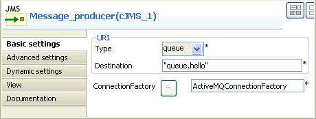
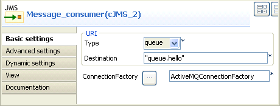
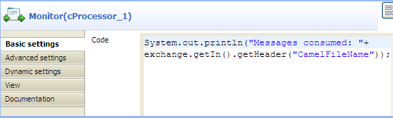
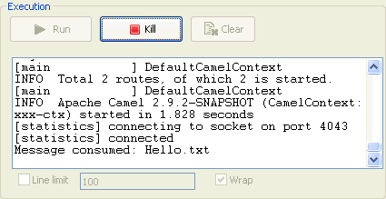

|
Component Family |
Messaging | |
|
Function |
cJMS allows messages to be sent to (or consumed from) a JMS Queue or Topic. | |
|
Purpose |
cJMS is used to send messages to, or consume messages from, a JMS Queue or Topic. | |
|
Basic settings |
Endpoint URI/Schema |
Type in a name for the schema of the message. |
|
|
Endpoint URI/Type |
Select the message type, either queue or topic. |
|
|
Service/destination |
Type in a name for the JMS queue or topic. |
|
|
Broker/Codes |
Write a piece of code to specify the JMS connection factory to be used for sending or consuming messages. |
| Broker/Dependencies | Select the library that is required by the JMS connection factory from the list. | |
| Advanced settings | URI Options | Set the optional arguments in the corresponding table. Click [+] as many times as required to add arguments to the table. Then click the corresponding Value field and enter a value. See the site http://camel.apache.org/jms.html for available URI options. |
|
Usage |
cJMS can be a start, middle or end component in a route. | |
|
Limitation |
n/a | |
In this scenario, a cJMS component sends out a message from the local file system. The message is then consumed by another cJMS component.
From the Palette, expand the Messaging folder. Select the cFile component and drop it onto the design workspace.
Repeat this operation to drop two cJMS components onto the design workspace. One is used as the message producer and the other as the consumer.
Expand the Processor folder, select the cProcessor component and drop it onto the design workspace.
Right-click the input cFile component, select Row > Route in the contextual menu and click the producer cJMS component.
Repeat this operation to connect the consumer cJMS component to the cProcessor component.
Double-click the input cFile component to display its Component view and set its parameters.

Define the properties of the cFile component, as shown in the above screenshot. In this use case, simply specify the file path, select the noop check box and leave the other parameters as they are.
Double click the producer cJMS component to display its Component view and set its parameters.
 In the Schema field, type in producer to name it as we want it to send the message.
In the Type field, select queue to send the message to a JMS Queue.
Add the libraries to the Dependencies table as required in the Codes. In this use case, we use the default connectionFactory
ActiveMQConnectionFactory, which needs three libraries as shown in the above screenshot. Click [+] below the dependencies table to add the libraries from the list.Double click the consumer cJMS component to display its Component view and set its parameters.
 In the Schema field, name it as consumer as we want it to receive the message.
Repeat step 7 and step 8 to configure the consumer as the producer because we want to send and receive the message between them.
Keep the default setting of the cProcessor component.
 Press Ctrl+S to save your route.
Click the Code tab at the bottom of the design workspace to have a look at the generated code.

As shown in the code, a message route is built
fromthe endpointcFile_1.tothe endpointcJMS_1. Then another message route is built from the endpointcJMS_2and printed bycProcessor_1.Click the Run view to display it and click the Run button to launch the execution of your route. You can also press F6 to execute it.
RESULT: The message is received by the consumer and printed in the console.
|  |